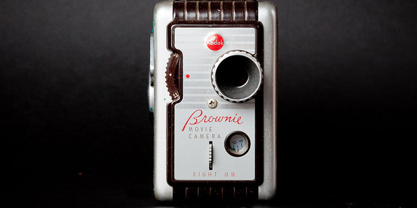
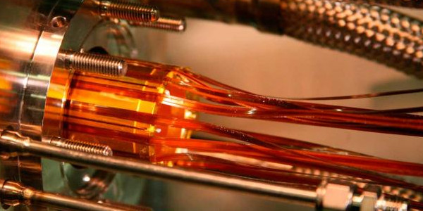

Blog Entries
-

Shooting and Editing videos in GNU/Linux
This year, in summer, I decided to apply for the prestigious Shuttleworth Fellowship program.
The Fellowship program is incredible!!! Why? Because all the fellows are amazing and their projects and ideas are mind blowing :-) Just to give you an idea, here is a short list of their Alumni:
- Mark Surman, Executive Director of Mozilla
- Francois Grey, Coordinator of Citizen Cyberscience Centre
- Rufus Pollock, co-founder & director of Open Knowledge Foundation, or
- Phillip Schmidt, Executive Director & Co-founder of Peer 2 Peer University.
Amazing right!? As you can see, the level is pretty high!!! If you additionally take a look to the current fellows then you can start to tremble.
Fellowship Application
Applying for the fellowship has two steps:
- the regular paperwork, plus
- a short video pitching why they should fund you and your idea that would change the world.
Pitching a project or idea is always hard. Really hard.
You need to work on it as much as possible, trying to express as clear as possible what do you want to achieve if they fund you.
For the written proposal, a good colleague and friend helped me to shape the document. However for the video I was alone!
Before moving forward I have to say that I own a good DSLR camera. It is not a professional one, those are really expensive, but a modest one that allows me to record video in high quality without too many problems.
As you can see, the gear was not the problem. The problem was that I've never filmed a short-movie in my life.
Learning how to shoot a video
OK, so I do not know how to shot a video, and I only have 2 weeks to write the application, shoot the video, edit it, and send everything to the program. Did I hear the word: stress? :-)
Well, as I didn't have any idea about how to shoot a video with my DSLR camera I decided to learn about it. I love films, art, etc. so I usually visit the video website Vimeo. Vimeo is like the playground for artists, where they show their creations. Just to give you an idea how creative are the users, check this video:
Obviously, I would love to create something like that, but I've to be realistic. First I didn't know how to shoot properly a video, second you need to be very creative to build something similar to the previous movie, and third I only had two weeks. Additionally, I only had used a very simple video editor in my life: OpenShot. Hence, I just wanted to learn the very basics principles, and apply them for my video application.
Luckily, the Vimeo crew have created the School of Video with a specific set of lessons just for DSLR Cameras.
The DSLR lessons are a must if you want to shoot with your reflex camera. I watched all of them while I had my camera with me, configuring it properly, and experimenting a bit with it. If you can, watch all videos, they are very helpful and you will learn a lot.
Once I had the proper configuration for the camera, I had to actually shoot the video. But before going crazy and shooting the video I decided to do a bit of research again. I basically expended one afternoon browsing Vimeo and Youtube looking for other video applications for the Shuttleworth program to see what other people have done.
In general all the videos were shot with one cut, with the applicant in front of it pitching his/her project, using almost all the time available (5 minutes).
While I was watching them I knew that I had to do something different, if I wanted to get the attention of the Shuttleworth judges. Hence, I decided to create several cuts and reduce the video length as much as possible. Why? Because I didn't want to get them bored :-)
Now that I knew the initial structure, it was time to learn a bit more about how to tell a story with a film.
The Art of Storytelling
Again, I went back to the school of video for more resources and I found this amazing video:
The video explains perfectly well how your script has to look like. Basically you need to answer the following questions or points:
- People: Who is in the story? This one was easy to answer: me!
- Place: Where does the story take place? Easy: Madrid, Spain.
- Plot: What is the conflict and the journey? This is the tough one! Basically pitching my project.
- Purpose: Why should anyone care about this? Another complicated one. Here I explained why I'm pitching my project and why is important.
After watching the video I started to write down my script answering those questions. The process helped me a lot to focus on what I wanted to tell, and more importantly: how I wanted to tell it.
My pitch is about Citizen Science: citizens doing science themselves with simple tools that I am building.
Citizens are a key aspect of my pitch, so I wanted to give them a lot of relevance and I decided that I needed to film citizens, but where?
Well, the question Place gave me the answer. As I am based in Madrid, I decided to present the place, Madrid, filming in the most popular places: Sol, Callao and Plaza Mayor.
As I was going to shoot in the streets, I needed to add also a sound track according to the city style, so I browsed several open licensed tracks from Hip-Hop that could fit with the video. As you can see, I was giving body to the video thanks to answering the four P's.
Then I wrote plot. I expend a lot of time refining it until I was happy with it. I recorded myself several times repeating the text, just to get used to what I wanted to say, to check the rhythm, etc. This process helped me to rephrase several times parts of the script and to make it the way I wanted. It may sound silly, but I recommend you to film yourself to relax, learn your script, look natural, etc.
Finally, my wife and I went to the final place where she was going to film me. But when we were preparing I realized that we had a problem: the quality of sound as we were going to shoot in a public space.
The previous cuts were fine, because the sound of the camera were going to be overwritten by the sound track. However, in this new cuts I needed to sound as clear as possible. Therefore, how can I do it without a professional camera? The solution: back to Vimeo and Google to do some research about it.
Recording clear sound
In general people recommend you to use a separated voice recorder, so you can sync the audio later in the video editing tool. I didn't want to buy a recorder just for this video, but it looked like it was the only feasible solution. While I was checking prices, I had an idea: what if I used my own smartphone with its headphones and integrated mic? It sounded crazy, but it was worthy to give it a try.
I set it up: the phone in my pocket, the headphones inside my polo using one of the buttons to lock the mic properly and hide it from the view of the camera. Then, I pressed the record button, say the standard "hello, hello, one, two three" and a new audio clip was saved. It worked like a charm, and the cost of it was 0 EUR :-)
A cheap prompter
With everything more or less solved, it was time to create a prompter. The solution: a spiral notebook. Each page was the text I've to say when recording a cut, so it was really easy for me to read it. Tips: use capital letters, so you can read it clearly, and adjust the length of the sentence in a way that it fits the rhythm that you want to give to your pitch. Try it several times before going to shoot, until you are really comfortable with the result.
We filmed every cut several times, from different angles, and in different places. This work flow allowed me to choose between different videos and try different ideas when editing it. With all the materials saved in my hard disk, it was time to start the video editing, or how I called it: the panicking area.
Editing the video (aka panicking mode on!)
I am a big fan and user of open source software. I release all my photos under an open license and all the code I develop is also open source. In other words, I am a true believer in open source, so I wanted to create the full video using only open source editing tools. In this case OpenShot.
OpenShot is very handy. You can separate several tracks in your movie, add vectorial tittles (that you can edit with Inkscape), sound clips, make transitions, etc. It looks amazing, right? Well,I guess that for small projects is not a problem, but for me it was a really frustrating time because every time I saved the project or changed something, the application crashed.
The good thing though, was that even tough it crashed almost all the time, the progress was always saved and I never lost any information.
The first thing I worked on were the titles. I used Inkscape to create them, and again, in order to give the same look and feel to the whole video, I searched for a nice font and a background to overlay the text. As the main theme for the video is the city, I decided to use some graffiti droplets as the background for the text, keeping a clean and modern font.
The next step was to sync the audio files with the videos. To my surprise I discovered that OpenShot doesn't have that feature, so I started to freak out. Literally. Two breaths later, I did some Googling and fortunately I found another open source video editor that actually can do the sync "automatically": PiTiVi.
I installed the software, and I tried out. The first time it worked, so I was really happy (later I discovered that for some video and audio clips, it never synchronized the audio tracks; as I filmed several times the same cut, I'd always a pair of clips that worked). Thus, my current work flow was the following:
- Import video and sound clip in PiTiVi,
- Sync the sound in both items,
- Export the final video with the synchronized audio,
- Import the video in OpenShot to do the final editing.
Did you say: painful? Yes, really painful. Add also that every time I changed something in OpenShot it crashed, so you can have an idea how painful it was. However, I wanted to create the video using only open software tools so I forced myself, and the result was this:
After all, the experience was really beautiful because I learned a lot. Some people would say that open source tools sucks (I do not share that feeling at all), but actually, thanks to that I've learned a lot, due to all the research I did.
When I finished my video, I checked the OpenShot web site to see if there is a new version that fixes all the problems I had, and luckily it seems like a new version is in the oven. Thus, in the future it should be much easier to do it in GNU/Linux.
Final note: I want to try the popular Lightworks and see how good it is, but as usual, I do not have enough time :-)
-

2nd CERN Summer Webfest
The second CERN Summer Student Webfest has been an amazing event. Physicists, designers, computer scientists and engineers worked together in a 48 hours marathon to create a set of amazing projects involving physics and modern web technologies.
This year, students worked in data visualizations for the most popular scientists at CERN, an antimatter CrowdCrafting.org application, games for teaching and learning physics using different type of games: simulators, puzzles, strategy, etc., reproducible science, and more many more!
The first day, the students pitched several projects and ideas. Most of the students proposed a game based solution for teaching and learning physics, becoming this category the most popular with 8 games! There were other categories:
This year we have introduced a series of tutorials where the students could learn new technologies, techniques, etc. Additionally, we invited them to also propose to give some of the tutorials, making the webfest a very alive event where not only the organizers take part but also the participants suggesting and creating new elements in it.
The tutorials were really interesting:
- Making Website and Media using Mozilla Webmaker and Popcorn Maker, by Michael Kohler (Mozilla).
- Introduction to CrowdCrafting/PyBossa, by Daniel Lombraña González (Citizen Cyberscience Centre).
- Facemesh Clone -- Web Programming Workshop by S.p. Mohanty a CERN Summer Student.
- Hardware Programming and Arduino by James Devine (CERN).
- Communicating Your Science by Julie Gould (The Movile Collective)
- Masterclass on particle physics -- Measuring lifetime of D0 particle by Andrey Ustyuzhanin (CERN).
As in the previous year, the atmosphere was amazing. The students participated in the tutorials (when they were not really busy working on their projects), chat and about everything: code, code, code and work ;-)
On Sunday afternoon, the final pitches about the projects were made and the winner was announced: Mother Hunt. In this game you are an end state particle that explores CERN to try to reconstruct his family history of decay mothers and ancestors.
The team created a 3D world using some of the available models at CERN, making a very interesting and immersing game in the CERN scenario. They created a short story line that could be played in one computer, and they are hoping to release the software, so more people could play it and learn physics.

The other two final chosen projects were:
- Reproducible Science: an IPython module for ROOT that allows any scientist using the ROOT software to share and improve their research on the web.
- Popular Physics in History a web tool that analyzes the most popular scientists at CERN querying back end services like CERN Document Server and INSPIRE High Energy Physics Library.
The event was a success, and we hope that all the students had a lot of fun participating and developing their projects. We will be update this entry with more photos and videos, as soon as they are available.
-

Mapping Antimatter tracks with CrowdCrafting.org
This last weekend, CERN hosted a very special event: the 2nd CERN Summer Student Webfest organized by the Citizen Cyberscience Centre.

The Webfest invites CERN summer students to participate in a 48 hours marathon hacking new applications, tools, games, etc. about physics. This year, I participated and worked in a very interesting one: The Antimatter project
With a team of around 8 persons, we divided the work in different areas and learned about the project and the goals for the CrowdCrafting application.
Michael Doser from CERN and the spokesperson from the AEgIS experiment, is studying antimatter.
But, what is antimatter? The observable Universe is composed almost entirely of matter but we can produce stuff called antimatter in the lab. Antimatter is material composed of antiparticles. So for example, a positron (the antiparticle of an electron) combines with an antiproton to form an antihydrogen atom.
Antiparticles have the same mass as normal matter particles but the opposite charge. When an antiparticle collides with an ordinary matter particle they both obliterate to emit radiation and some other particles - this is called annihilation.
Because of Einstein's weak equivalence principle (gravity doesn't depend on composition) antiparticles should interact gravitationally just like particles of ordinary matter - and that's what scientist's expect to observe - but if they don't then Einstein was wrong...
What's the experiment?
The Antihydrogen Experiment: Gravity, Interferometry, Spectroscopy (AEgIS) experiment at CERN shoot antihydrogen atoms horizontally, whereupon they fly (and drop) until they hit a wall made of matter - any matter will do, silicon, silver, paper,... - and annihilate there
On hitting the wall, the antihydrogen annihilates with a nucleus of the wall to produce mostly pions and some other particles - which we'll call starburst.
The starburst travel through a special gel called an emulsion and we can see its tracks. If we trace these tracks to their point of origin then we know exactly where annihilation occurred.
Then as we know the starting position of the antiparticles, the distance they travelled to the point of annihilation and how much they dropped - we can work out how far the antiparticle fell during its journey.
Then we can figure out how antimatter interacts gravitationally.

Michael Doser gave us access to a set of 99 areas photographed with a microscope, that allows us to see tracks and the starbursts. Each of the areas have 40 pictures. These pictures cover the same area but at a differen depth.
As we discussed about the project, we decided to create a "movie style" task, where the CrowdCrafting application will be playing in a loop all the images for the same area. Then, we will allow the volunteers to map the tracks using their mouse as in any image software. The coordinates of the tracks, starting and ending points, will be saved, and we will use those points to render in real time a 3D model of the tracks thanks to WebGL.
We divided the work between different groups, and we worked together in the different areas: Creating of tasks based on the data 2D movie style using HTML5 canvas feature 3D model of tracks using HTML5 WebGL Physics description of the problem and tutorial.
For the 2D Canvas solution we decided to use the popular Kinetic.JS library. This library is very versatile as you can not only render images in the 2D canvas, but also paint lines.
For the 3D model we decided to use the popular Three.JS library. We created a 3D area using the Tron colors palette to draw the reported tracks by the users.
Then, we have another group that worked really hard in explaining the physics of the experiment and the tutorial. We even created a Mozilla Webmaker project about it.
At the end of Sunday we had a fully operational prototype that allows you to actually track antimatter in CrowdCrafting:
From here I would like to thank to all the team members because the actually loved the project and push it to the next level. This efforts will help other CrowdCrafting/PyBossa developers to use the new HTML5 Canvas and WebGL features developed for this application, as the source code is already available in Github and can be used as a template for any CrowdCrafting/PyBossa application.
If you want, you can follow the Github repository development of the project.
NOTE: Image courtesy of CERN
-

Analyzing Icelandic conviction rates
CrowdCrafting.org hosts a wide variety of applications that range from science to humanities. Since the official launch of CrowdCrafting.org, lots of applications have been created , but one of them has done a really impressive job: Héraðsdómar - sýknað eða sakfellt.
Héraðsdómar - sýknað eða sakfellt is an application developed by Páll Hilmarsson (@pallih, Github). The application was one of the most popular and active applications in CrowdCrafting.org when it was published (300 volunteers helped!), so I wanted to interview the author and ask some questions about it: why he created the application, what was the result, etc.
Páll told me that he created the application after reading the an article published in an Icelandic news web site.

The article analyzed the conviction rates of a named judged in the Reykjavik district court, stating that the conviction rates for cases where he presided as a judge was 99%. Páll found it interesting, but also "biased" as the reporter only analyzed one judge.
After the publication of the story, some bloggers and readers of the post, discussed about why analyzing only one judge, reporting it back to the author. The journalist addressed all the questions and comments answering that
calculating all the conviction rates for every case would take too long.Páll was not happy with this answer, so he decided to show him, and other reporters, that this could be easily done by crowdsourcing the job, and that it would not take too long.
Páll uploaded around 4,700 rulings as tasks, and the volunteers analyze them in 7 days! Each ruling went to at least three different users, totaling 14,208 assessments. In the end more than 17,000 assessments were made by over 300 users! (you can check the stats here).
But here it comes the best part, Páll only spent 10 hours in this project (including the time to scrape the rulings, set up the tasks on CrowdCrafting.org and displaying the results on his blog. Amazing!
Note: Entry photo by mira66 (CC BY-NC-SA 2.0).
-

CERN Summer Webfest
The first weekend of August of 2012, CERN hosted the first Summer Student Webfest where physicists, designers, computer scientists and engineers worked together in a 48 hours marathon to create a set of amazing web applications prototypes involving physics and modern web technologies.

The first day, different projects were presented so the students could decide in which one they wanted to participate. Some of the ideas were proposed by the organizers, but also some of the students came with really good suggestions. At the end the projects that were chosen to work over the 48 hours period were:
- Open Data for CERN site
- ParticleQuest a game to learn physics
- A cheap Cosmic Ray detector built with Arduino and Android
- A new infographics and explanation for the Standard Model
- A revamped LHC Dashboard using HTML5
- Virtual Worlds for the LHC@Home platform
One of the most repeated "memes" during this first day was that everyone wanted to make as easy as possible the explanations about physics for the general public. As a consequence of this overlapping, a huge team was created regarding the idea of explaining physics via a new Standard Model as one month ago the Higgs Boson discovery was announced at CERN.

The next 48 hours were amazing! The students arrived the Saturday morning around 10:00 am and they worked almost 48 hours non-stop in order to win the prize: a trip to the Mozilla Festival in London in November, courtesy of the Mozilla Foundation.
The event was free-form based, so some of the projects evolved during the event, and for example the mega-team around making more accessible physics for the public split themselves in two small teams that worked together in the Standard Model and a new awesome idea about creating a new web tool to create Feyman diagrams and use it to explain physics :-)
It is really difficult to tell you how amazing it was, so I "interviewed" each participant so they have to explain what they have done during the weekend and if they were enjoying the event. The following video (14 minutes long!) shows how people worked together in different teams and their projects. The video was recorded before the prize ceremony, so you can feel the pressure of not having enough time to improve a bit more their project :-)
The winning project was the ParticleQuest game (you can actually play it at http://particlequest.com) a fork of the Mozilla's Open Source game BrowserQuest.
The competition was really tough as the projects created really awesome applications, but the best part for me was seeing how these students got really involved in the event.
Here you have some photos I took of the final applications (check the cosmic ray detector video):
We asked the participants what they liked about the event and if they were happy. The mega-team basically summarized the event like this:
- The event should start earlier, so we have more time to work on the project.
- We have been able to self-organized ourselves without a supervisor!

Amazing!! Indeed all the participants loved the event. Just to give you an example: after the prize ceremony John Ellis gave a special talk about the State of the Higgs Address. A few minutes after the full event was over, the students started to organized themselves again to keep working in their respective projects.
Another interesting outcome from the event was that only a few designers joined, but they were key persons to the success of all the projects, as they actually helped in every project (special mention to Andre-Pierre Olivier for his help in almost every project!).
The source code of the projects is available in Github, so if you want to know what we actually did during those 48 hours, go to Github and enjoy it!
If you want to see more photos from the event check the album I've created with pictures from almost all the participants!
The event was co-organized by the Citizen Cyberscience Centre and the Peer 2 Peer University, and sponsored by the Mozilla Fondation and the Shuttleworth Fondation.
-

Earthquakes & citizen scientists
The Asia@Home workshop started focused on earthquakes and volunteers to track them. The project The Quake Catcher Network presented their results an approach in different parts of the world (Chile, Christchurch, California, etc.) and a collaboration with Taiwan for monitoring earthquakes.
This project uses low cost USB sensors to detect earthquakes that can be attached to any computer with an USB port. The only requirement is to screw the sensor to a wall or a surface so when there is an earthquake you the sensor will not jump.
There was a talk about a different sensor, Palert, that tries to measure earthquakes but using a different approach: self-sustained sensors that can have a battery to record the shock waves even though there is no power supply.

While all these talks presented the point of view of the projects, we have a nice talk from the point of view of the volunteers: Dudumomo. He presented several charts about how volunteers provide lots of CPU cycles to different projects, and only ask -in most of the cases- news about the research and progress that the project is achieving thanks to their donations.
There was a lot of discussion about different ideas to engage more volunteers, communities, outreach, new places for deployment, etc. After a first successful day, we relaxed a bit having dinner in one of my favorite Taiwanese restaurants: The House of tea, where everything, and when I say everything, is everything, is cooked with tea leaves :)
-


{kind=link}